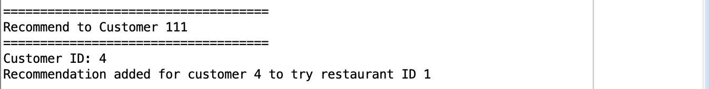

Palate: The App for Foodies
Bringing my Code to Life with UX
Overview
In the fall of 2024, I was assigned an SQL based assignment for my 'IS 420: Database Application Development' course at the University of Maryland, Baltimore County (UMBC). The project involved designing and developing a database system to manage a company's chain of restaurants. My team and I worked on creating tables for important components like restaurant locations, menus, employees, and customer orders. We also developed procedures to handle tasks such as adding new restaurants, updating menus, processing orders, and generating reports.
Problem Statement
The problem this project aimed to address was to create a well-organized database system to manage restaurant chains, their daily operations more effectively, and populate restaurants to users based on their preferences. This project focused on developing a solution that would simplify these processes, ensure accurate record-keeping, and support the restaurant chain in running smoothly and making better decisions.
Role
Lead Programmer
UX Designer
Tools Used
SQL
Figma
Duration
September 2024 - December 2024
My Contribution
Code Explanation
I was responsible for designing and implementing the Reviews and Recommendations functionality within the database project. My contributions included creating the necessary tables for storing reviews and recommendations and developing key stored procedures to manage these operations.
Add_Review: Allows users to submit reviews for restaurants, taking in their email, star rating (1-5), and feedback. A helper function retrieves necessary IDs for seamless integration.
Buy_Or_Beware: Ranks restaurants by their average star ratings, displaying the top rated restaurants and the worst rated restaurants. Outputs include average stars, restaurant ID, cuisine type, and standard deviation.
Recommend_To_Customer: Suggests the highest-rated restaurant for a specified cuisine type to a customer, ensuring recommendations are for restaurants they haven't previously visited or ordered from.
List_Recommendations: Provides a report summarizing recommendations for all customers, including customer names, recommended restaurants, cuisine types, and average star ratings.
Skills Learned Through the Code Implementation
Gaining Proficiency in Structured Query Language
PL/SQL Programming
The code implementation covers creating stored procedures, which are reusable blocks of SQL code. Additionally, I practiced passing parameters into procedures, handling output, and using exception handling to manage errors.
SQL Querying and Data Manipulation
I learned to create complex SQL queries involving multiple tables to fetch and aggregate data. By using functions like AVG(), STDDEV(), and COALESCE(), I developed an understanding of SQL operations and how to summarize data.
Error Handling and Debugging
The code demonstrates using exception blocks to handle errors that might occur during execution, ensuring that the system remains in tact in case of unexpected issues.
Stored Procedure Design
Creating stored procedures like add_review, buy_or_beware, and Recommend_To_Customer demonstrates how to break down large tasks into smaller pieces that can be reused throughout an application.
Code Explanation
'Add_Review' Procedure
Key Functionality
The add_review procedure allows customers to submit reviews for restaurants. It first checks if the restaurant exists by looking up its unique ID based on the name. If the restaurant is found, the procedure adds the review, including the customer's email, rating, and feedback, to the database, ensuring that each review has a unique identifier. The procedure then saves the review by committing the transaction. If the restaurant is not found, an error message is displayed.
'Add_Review' Code
Code Output
Code Explanation
'Buy_or_Beware' Procedure
Key Functionality
The key functionality of the buy_or_beware procedure is to generate reports on both top-rated and bottom-rated restaurants based on customer reviews. It calculates the average star rating and the standard deviation of ratings for each restaurant, sorting the results to display the highest and lowest-rated restaurants.
'Buy_or_Beware' Code
Code Output
High Fidelity Prototype - Customer Reviews
Visualizing the 'Add_Review ' and 'Buy_or_Beware' Procedure
'Recommend_To_Customer' Procedure
Code Explanation
Key Functionality
The Recommend_To_Customer procedure recommends the highest-rated restaurant specializing in a specified cuisine type to a customer, provided the customer hasn't already ordered from a restaurant offering that cuisine. It first verifies the customer's existence, then identifies the best-rated restaurant based on average review ratings.
'Recommend_To_Customer' Code

Code Output
High Fidelity Prototype - Hunger Quiz
Visualizing the 'Recommend_To_Customer' Procedure
'List_Recommendations' Procedure
Code Explanation
Key Functionality
The List_Recommendations procedure generates and displays a list of restaurant recommendations for customers based on their preferences and past orders. It joins the recommendation, customer, restaurant, and review tables to retrieve the customer's name, the restaurant's name and specialty, and the average rating of the restaurant. The recommendations are displayed, showing each customer's recommended restaurant, its cuisine type, and the average rating.
'List_Recommendations' Code

Code Output

High Fidelity Prototype - Hunger Quiz Results
Visualizing the 'List_Recommendations' Procedure
Final Prototype
56 Interactive Pages
Solution Overview
While designing high-fidelity prototypes to support the four procedures I created for my restaurant database project, I integrated features from my code to improve the customer experience. I also developed new ideas to make the prototypes more effective. Working with both PL/SQL and NoSQL, I gained hands-on experience with both back-end and front-end development, learning how to align technical capabilities with user-friendly design. My prototypes aim to make the restaurant selection process easier by providing clear access to customer reviews, enabling informed decisions, and encouraging a sense of community through shared feedback.
View the Final SQL Code Here!More Projects
Check out my other work